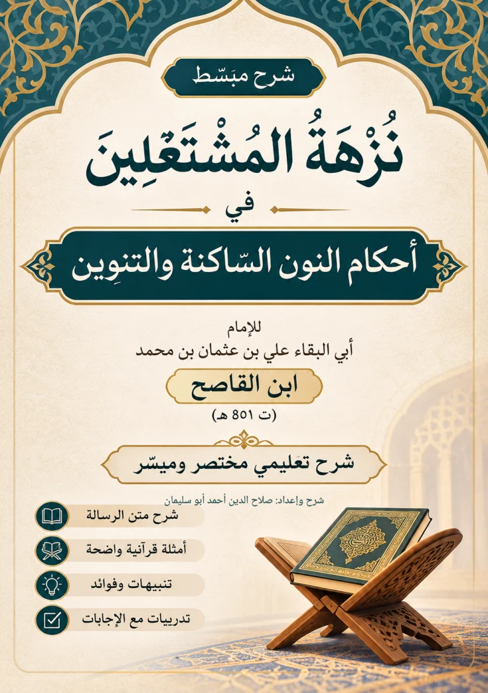

العودة إلى الفهرس

مختصرات علم التجويد
شرح نزهة المشتغلين في أحكام النون الساكنة والتنوين
شرح مبسط لرسالة ابن القاصح في أحكام النون الساكنة والتنوين
كتاب تعليمي ميسّر باللغة العربية (17 صفحة) يقدّم شرحًا واضحًا لرسالة «نزهة المشتغلين» للإمام أبي البقاء ابن القاصح (ت 801 هـ) في أحكام الإظهار والإدغام والإقلاب والإخفاء، مع أمثلة قرآنية وتدريبات محلولة.
لا يتطلب تسجيلًا ولا دفعًا. العمل محمي بحقوق النشر.